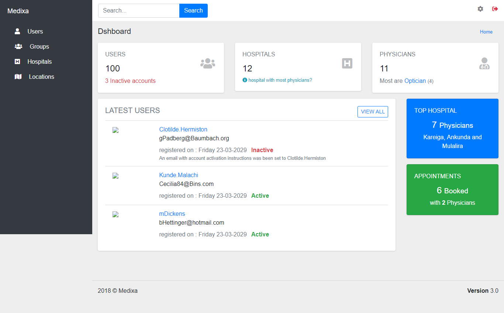
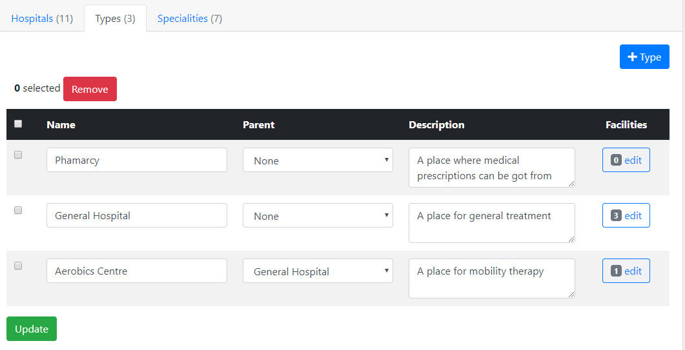
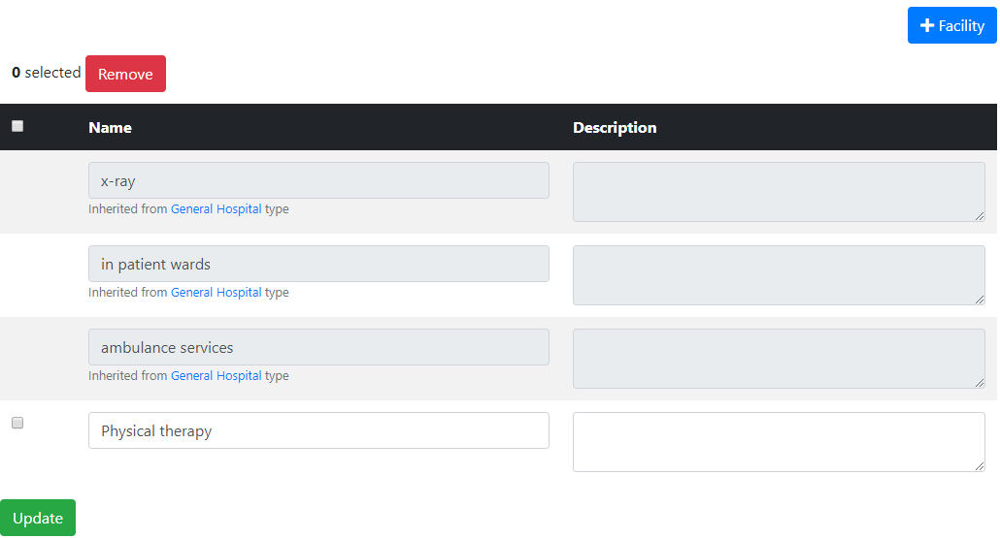
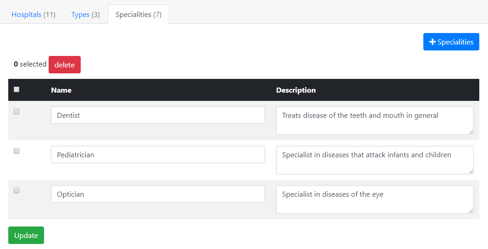
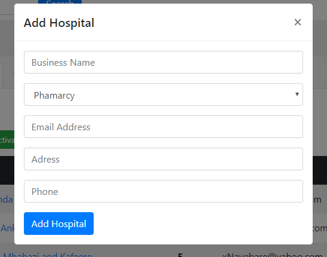
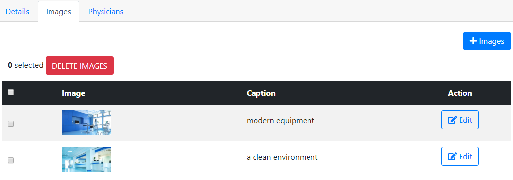
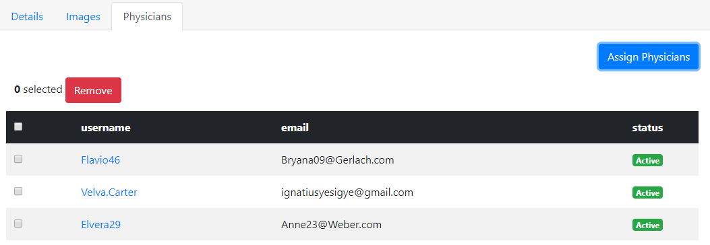
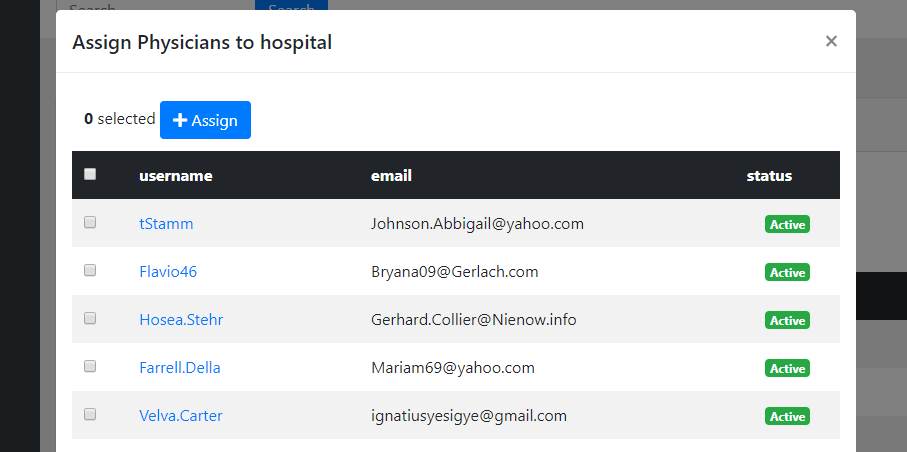
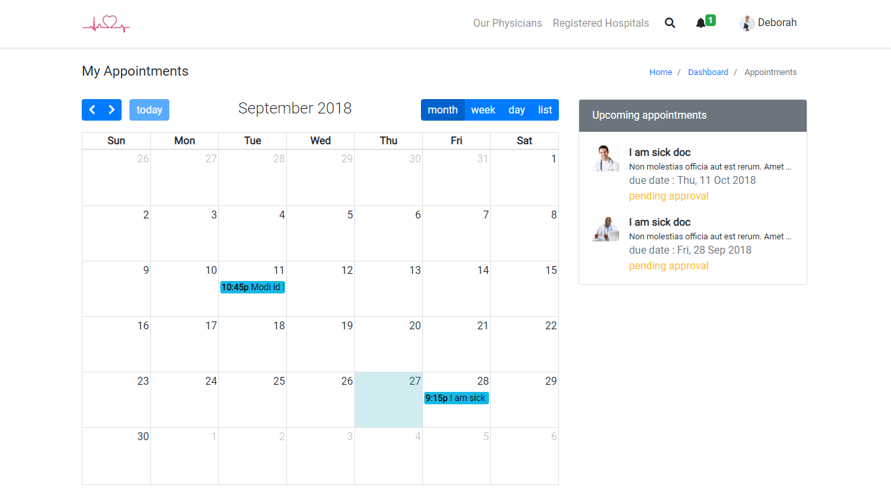

Documentation
Hello and welcome to the documentation. Thank you for purchasing this script.
This script is a hospital and doctor listing management tool. It is great if you are looking for an easy-to-use script to
register an updated listing of doctors and hospital from which users can search and book appointments.
In addition; the script allows users to book and track appointments with physicians, who will be duly notified by email
and in app notifications.
Dashboards are created for hospitals accounts where they can manage their physicians, define facilities they offer,
upload photos and more.
For more information.
Contact me
Installing the script on your server
Unzip the file into your server web directory usually the www, http or the public folder.
Edit the the base url in the config file at
application/config/config.php on line 26
from
$config['base_url'] = "http://medixa.test/"
to your domain
$config['base_url'] = "http://yoursite.com/"
Edit the .htaccess file at root of your app installation. You must have mod_rewrite
enabled on your server.
Default. Don't edit if your app is at the root of your server directory
RewriteBase /
if your app is in a directory (e.g. "myfolder")
RewriteBase /myfolder/
Setting up your database.
Import the database file into your mysql server,
The sql database file is located at the root folder named
database.sql
If you do not have access to a database manager like PHPMyAdmin,
you should be able to install the database by following these steps;
- Edit the root
index.php file on line 56 and change the environment to development
-
Follow the link
http://yoursite.com/migrate to install the database automatically.
This works assuming that your base url and .htaccess file were setup properly.
Done. You are now ready!
The admin Dashboard
When you have successfully installed the script, an admin account will automatically be created
with default authentication values for email and pasword. From the admin dashboard, you will be able
to manage and monitor hospitals, physicians and the application's behaviour.

Login credentials
email address
admin@admin.com
password
password.
We strongly recomended that you change these values for security reasons.
USERS
People using the system are refered to as guests or visitors, when someone registers an account and
logs into
the system, then they are known as users.
User Groups
When users are registered, they are assigned to one of 3 different user groups. User groups allows
different
users to interact with the system in a specific way.
Admin
The system admin is a role resbonsible for managing all the features of the system and the default
system user.
The admin is not visible to others and this account cannot be deleted.
- Activate registered hospitals.
- Manage all hospitals, assign doctors to hospitals.
- Manage all users, users groups and their details.
- Can edit their own account information.
Doctors
Users can only be assigned as doctors by the system admin.
- Schedule appointments with users.
- Manage their professional details.
- Can edit their own account information.
General Users
General users are system visitors who have registered an account and have more access to the system
features.
- Book appointments with doctors.
- Can edit their own account information.
Managers
Managers are general users who have been assigned to manage a hospital.
Users are assigned a manager role if they registered a hospital or when the system admin assigns
the user
as a manager.
- Manage hospital deetails and its data.
- Manage doctors assigned to the hospital
- Can edit their own account information.
Ading New Users
Users can be added directly to the website by the administrator, however, this is feature is only
available
as a matter of convinience; Users should be encouraged to register individually on the website so
as to
avoid authentication issues. Users registering their own accounts will ensure that they enter
correct information,
choose their own passwords and validate their email addresses.
To add a new user manually, follow these steps;
- On the admin menu, select Users
- Click the Add a user button
-
Fill in the form
| Field |
Description |
| Profile Photo |
User avatar image |
| First name |
User first name |
| Last name |
User last name |
| Username |
The name to be displayed on the system |
| Password |
The password should be five or more characters long |
| Confirm password |
Repeat the password to make sure it was entered correctly. |
| Email |
The primary way that the system communicates with the user. Also used for
authentication. |
Edit User data
Users can edit their account details and change their passwords after they have registered
accounts, the system
admin also has the priviledge of editing users' data.
- On the admin menu, select Users
- Click the edit icon button
- Update user profile
User Registration
Although users can be added by the admin, users are able to register a new account.
Registration is open to any of the system guests, however, they must activate their accounts
through
a link that is sent to them by email. This confirms that they initiated the registration process
and that the email
address provided is valid. This step is important because future communincations shall be through
this email address.
The admin can manually activate a user's account if the user cannot do it successfully.
- On the admin menu, select Users
- Select the user
- Click the activate button
Remove Users
Only the admin can remove users from the system, a deleted account will lose all the data that is
associated with
that account. To temporarily remove a user, simply deactivated the account, it will not be
reacheable by the user
and others until it is activated.
- On the admin menu, select Users
- Select the user
- Click the delete button
- Or click the deactivate button
HOSPITALS
Before managing hospitals, we need to set up types of hospitals and define facilities a hospital of
a certain type is might offer.
Hospital Types
You may create as many types as you want, and define facilities for each hospital type. facilities are define per
type and not globally because different types of hospitals might have different facilities, for example, a nursing
home
might have different facilities than a rehabilitation center.
- On the admin menu, select Hospitals
- Click the types tab

Hospital Facilities
When creating a hospital type, you can define any number of facilities for each type. If you have
created sub-types, then a sub-type will inherit all the facilities of its parent type.
- On the admin menu, select Hospitals
- Click the types tab
- On the types table, locate your type
- Under facilities column click edit

Manage Specialities
Specialities are defined here to create a speciality options list for doctors to choose from.
They are also used by the script in sorting, searching and filtering purposes.
- On the admin menu, select Hospitals
- Click the specialities tab

Adding a new hospital
After creating types and defineding hospital facilities, you are ready to add a new hospital.
- On the admin menu, select Hospitals
- Click the Add Hospital button
-
Fill in the form

| Field |
Description |
| Business Name |
Name of the hospital |
| Hospital Type |
The type of your hospital |
| Email Address |
Hospital's email address, may require confirmation |
| Address |
Physical location of the hospital |
| Phone |
Phone number |
After adding a new hospital, go on to edit page to add more information and added photos.
Editing a hospital
After creating a hospital. The editing page is provided for you to add more data about the hospital.
This data is grouped into 3 sections, the details section which contains hospital information, the
images section where you upload your photos and a physicians section where you manage hospital doctors.
Details Section
This section contains a detailed form with fields to edit hospital information
| Field |
Description |
| Name |
Name of the hospital |
| Slogan |
slogan of the hospital |
| Open Hours |
The time the hospital opens and closes |
| Address |
Physical location of the hospital |
| Phone |
Phone number |
| Email Address |
Hospital's email address, may require confirmation |
| About us |
More about the hospital, for example, mission statement or your vision |
| Active |
Activation status, inactive hospitals will be hidden from the public |
Images Section
This section manages hospital photos that will be displayed in a slider when users are looking at the hospital.

Physicians Section
This section manages hospital doctors. Here you can only assign existing doctors to the hospital or remove them
from the
hospital. To add new users or remove them from the system, check out the
section on users

Assigning doctors to a hospital
- On the admin menu, select Hospitals
- Click the hospital name to edit it
- Click the Physicians tab
- Click the Assign Physicians button
- Select the doctors from a list
- Click the Assign button

DOCTORS
Doctors or physicians(as sometimes refered to) are users who have been registered as medical practitioners
that provide healthcare services. Doctors can only be added by the admin, users cannot register
directly as doctors. The script was design like this to avoid fake entries, the admin
is therefore tasked with creating doctor accounts.
Managing Doctors
Doctors are still considered users and can be edited in the
users section,
The only difference is that doctors have a free extra fields that define their profession.
| Field |
Description |
| Reg. No |
A unique doctor registeration number |
| Description |
A brief portifolio about doctor and their practice |
| Speciality |
Choose a field of sepecialization |
| Qualifacation |
Highest education or training level |
| Other qualifacation |
Any other certificates or awards |
| Mobile Services |
You may be required to travel to your patients. |
Assiging to a hospital
Hospitals are responsible for assigning doctors, doctors cannot assign themselves to hospitals.
To learn how to assign doctors to a hospital, see the
editing hospital section
of this documentation.
APPOINTMENTS
This scripts allows registered users to book appointments with doctors. Doctors can also book appointments with other
doctors.
Users that are not logged in will be prompted to log in before the can book an appointment.
Booking an appointment
When a user books an appointment with a doctor, the doctor is notified by email and they will also get a reminder
the next time they login. Doctors can then approve or cancel the appointment, at which point the user will
automatically
be notified by email.
Managing appointments
Logged in users are able to view and manage their appointments although only doctors can approve and/or reshudele
existing appointments.

SETTINGS
Settings module offers ab interface where you can change your preferences and how the script works.
Managing appointments
The script's esay-to-use interface offers a simple was to change the default language and also translate
text to different languages. This scripts uses english as the initial default and a reference language.
Please note that translations are stored in files on your webserver. You must have write permission
so that you can translate file. If you don't, contact your webmster or you could manually write out
translated files and upload them to the server.
How languagues work